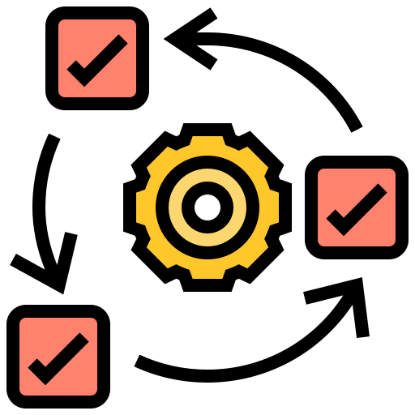

Sobre Mim:

Moro em São Paulo mas atendo clientes do mundo todo. Sou conhecido por fazer produtos de qualidade, durabilidade e que agregam valor para meus clientes.
Trabalho usando a web como plataforma, ou seja, respiro HTML5, CSS3 e JavaScript (ou melhor: ECMASCript).
Crio sites para todos, seguindo as principais diretivas de acessibilidade, responsividade e web semântica, sem descuidar da qualidade de código.
Como Trabalho:

João é o melhor desenvolvedor front-end com quem já trabalhei. Muito eficiente e muito capaz. Recomendo sem dúvidas!
-- José Souza, Fiat
Satisfazer meus clientes é prioridade. Para isso, garanto um processo de desenvolvimento altamente interativo, baseado em feedback contínuo. Não trabalho com escopo fechado: o cliente é que decide quando o produto está pronto.
Também não trabalho com prazos fechados: qualidade é importante demais para ser sacrificada.
Experiência:

João domina as tecnologias como ninguém. Eu apresentava um problema, ele tinha na ponta da língua a solução mais adequada com as tecnologias mais recentes.
-- Manoel Santos, Petrobrás
Já desenvolvi projetos para grandes empresas como BMW, UOL e IBM. Neles, o foco principal era entregar uma experiência imersiva e impactante para o usuário final sem descuidar do desempenho e da acessibilidade da página.
Também já fui contratado para transformar grandes portais, como Terra e G1, em páginas responsivas. Fui responsável por renovar o layout, reorganizar o conteúdo e re-escrever o código de forma mais reaproveitável.
Comunidade:
Procuro repassar meu conhecimento para a comunidade. Para isso, já dei diversas palestras e mantenho um blog.
Procuro repassar meu conhecimento para a comunidade. Para isso, já dei diversas palestras e mantenho um blog.